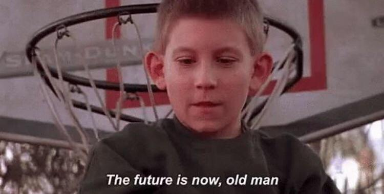
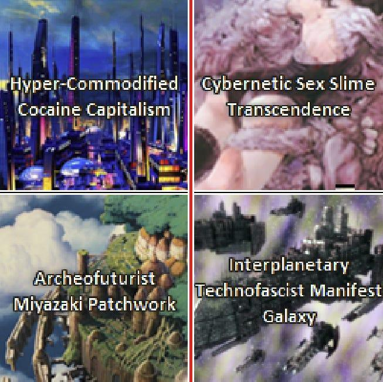

Make the World a Better Place: e/acc for the Rest of Us

One cannot go anywhere on tech-X(f/k/a Twitter) without seeing some variant of "e/acc" in people's bios. For those outside the loop, it stands for "effective accelerationism" and more or less means "let's build huge AI and rockets and get to the 'future' asap"[1].
Those e/acc guys are a fun bunch. I wish everyone was as forward looking as them. But they are a vanguard and it shows. Take these "vignettes of many worlds"[2] for example: 
Does that make any sense to you? Yeah, me either.
We need their energy, but it sorely needs some context within the real world. There's a now-unfashionable phrase that fits the bill.
Make the world a better place
For too long cynical grifters co-opted this phrase to peddle nonsense to fools[3]. But now more than ever it's time to take it back. It is both imperative and possible that we make the world a better place.
Perspective
Our civilization faces many challenges. Today people fear nuclear war, population collapse, and global warming (among many other things). These problems appear insurmountable and existential in a way never before experienced by humans. But then again, have not all historical problems been existential on a local scale? To a hunter gatherer, our modern threats are no different than the threat that a lion, a flood, or a much larger tribe will suddenly wipe them out. Our world is large and the hunter gatherer's small. We fear losing our world, and so too the hunter gatherer. The hunter gatherer took no solace in the fact that other tribes would live on after the extinction of his own tribe. Similarly we wouldn't be comforted by the knowledge of alien civilizations living on if we were to wipe ourselves out. When the stakes are life and death, scale has no meaning. How did the hunter gatherer avoid the loss of everything? He made himself better. He made his tribe better. And he made his world a better place.
Scale
You don't have to be Steve Jobs to make the world a better place. Regardless of scale, making the world a better place starts with you. You are a part of the world. By improving yourself you are improving the world. Once you have handled yourself, work to make your friends and family better off. Be a good friend, spouse, parent, and sibling. And then finally, work to improve the lives of your coworkers and customers in your profession. Be a good collaborator. Listen to users. Use your talents to put smiles on peoples faces.
Most people don't think about making the world better through the "small" aspects of their life. Even worse, most people believe it is impossible to change the world through their work. We have become disillusioned with the idea of improving the world through our work. It is entirely understandable when we've seen countless cynical examples of technological grift and financial manipulation. We've let these examples discourage us from trying. We don't want to end up being a part of the next FTX, Theranos, or Atlassian[4] for that matter. We have developed learned helplessness. And so we hopelessly trudge through our day jobs; not hurting anything, but not really helping either.
But it's our job to shape the future. Our children will inhabit our vision and implementation of the future. Pessimism about the future shows no creativity, strength, or integrity. You're implicitly saying that tomorrow looks like today. Have you no imagination?
Timescale
Assuming the future won't be better leads to some odd conclusions. It implies there was some point in our history which is and always will be the peak of human civilization. For any year in our three-hundred-thousand year history there is no metric for which life was better then than now.
For all of the great years in human history: they were not perfect. The true value of a time is only seen with hindsight. There was no need for the car when horses worked just fine. There was no need for the internet when we had phones and fax machines. There was no need for printing presses when we had perfectly good monks working as scribes. Most improvements were initially unnecessary. The fruits of the harvest must take time to grow.
For all of the horrible years in human history: life is obviously better now. Consider the reverse. For any low point in human history, we can say there exists a time which was better. When times are bad, it's easy to despair and reminisce upon a passed golden era. Nearly a millenium separated the fall of the western Roman empire and the beginning of the Renaissance and subsequent Age of Enlightenment. Naturally those living in medieval western Europe could be forgiven for thinking progress was futile. But we have the benefit of hindsight on this "dark" period of history and know there is an upper bound on the stalling of progress.
In good times and bad we must open up our horizons. In good times we must break through the local maxima of previous discoveries. In bad times we must stubbornly refuse acceptance of the status quo and trust that our work will be rewarded. One should be distrustful of those prophesying the disintegration of civilization because of a few decades of socio-economic turbulence.
In Closing
Why should we strive to make the world a better place?
Firstly: we need to. We need to have the right attitude about solving the problems we face. The consequences are death. But the consequences were always death. C'est la vie.
Secondly: making the world a better place includes but is not limited to rockets. It includes relatively minor actions such as returning the shopping cart to corral[5].
And finally: making the world a better place takes into account the tides of progress. Setbacks are acceptable as long as we always strive for better.
Make the world a better place.
Footnotes
- Forgive me for this crude interpretation of it. It's always tough describing a meme, both in the sociological and the colloquial sense.
- AGI Futures
- The first thing that popped in your head was either Erlich Bachmann or "Mega-Corporate Platitudes".
- While not fraudulent, I implore the reader to ask themselves: is Atlassian a net positive?
- The Shopping Cart Theory